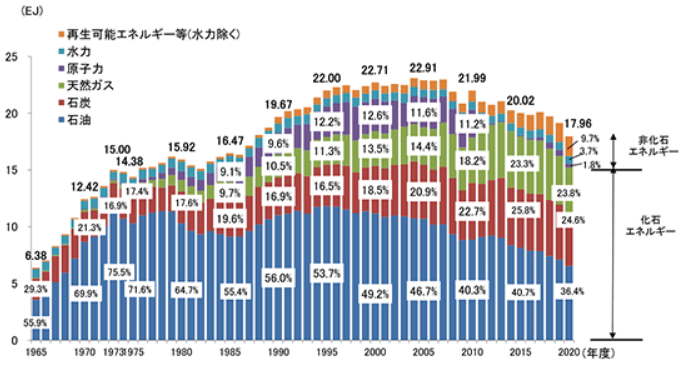

令和元年度 問8 有機化学及び燃料
天然ガスに関する次の記述のうち、最も不適切なものはどれか。（統計資料は、2016年度統計に基づく）
①
我が国において1969年米国（アラスカ）からのLNG導入を皮切りに東南アジア、中東からも導入が進み、2016年度一次エネルギー国内供給に占める割合は最大である。
②
016年度天然ガス供給の輸入割合は、石油と同様に極めて高い97.6%であり、世界のLNG貿易の約3割を日本の輸入が占めている。
③
我が国のLNGの輸入先は、供給先の多角化の結果、中東依存度は3割以下であり、石油に比べて地政学的リスクは低い。
④
我が国では、2016年度に天然ガスは電力用LNGに約64%、都市ガス用LNGに約32%が使われている。
⑤
発電用電源における天然ガスの使用割合は、2012年以降40%を超え、化石燃料の中で最大である。
正答
① 我が国において1969年米国（アラスカ）からのLNG導入を皮切りに東南アジア、中東からも導入が進み、2016年度一次エネルギー国内供給に占める割合は最大である。
一次エネルギー国内供給に占める割合が一番高いのは石油です。東日本大震災とその後の原子力発電所の停止の影響で一時期上昇したものの、原発の再稼働や再生可能エネルギー利用により石油火力発電の割合は減少傾向にあります。

日本のLNG輸入量は、特にオーストラリアからの輸入が増加しています。